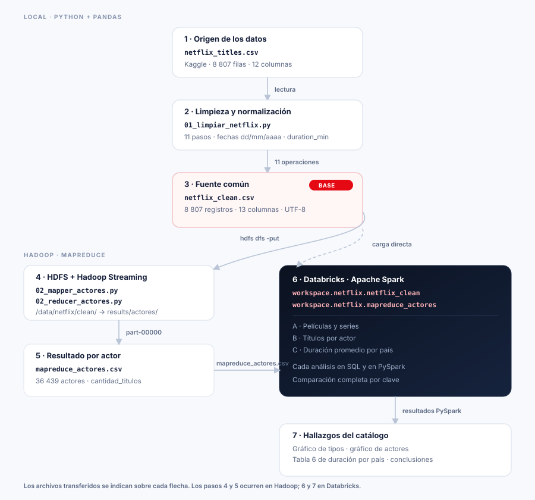

Gráfico 1 · Películas y series
Cantidad y porcentaje sobre el total clasificado
—
Gráfico 2 · Diez actores con más títulos
Barras horizontales con la mayor cantidad arriba
Tabla 6 · Duración de películas por país
Diez países con más películas utilizadas en el cálculo
| # | País | Películas utilizadas | Duración promedio |
|---|---|---|---|
| Cargando… | |||
Hallazgos principales
Lectura directa de los resultados
Cargando…
Diagrama del proceso
Archivos transferidos sobre cada flecha, incluida la carga directa del archivo limpio a Databricks

Conclusiones
Menos de 250 palabras · referidas al catálogo analizado
Cargando conclusiones…
Limitación de los datos: el catálogo describe títulos disponibles, no audiencia,
reproducciones ni éxito comercial. Además, cast y country
son campos multivaluados: un título puede sumar a varios actores o países, y los registros vacíos
permanecen nulos, por lo que los conteos describen participación en el catálogo y no popularidad.